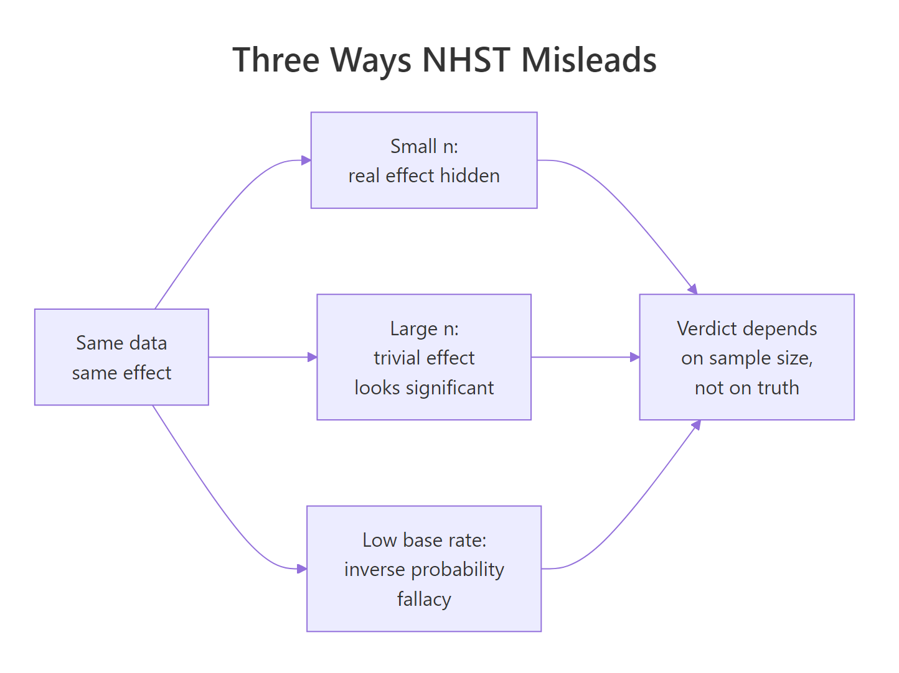
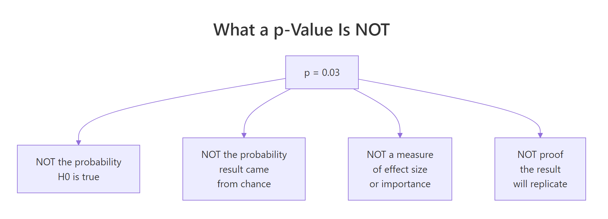
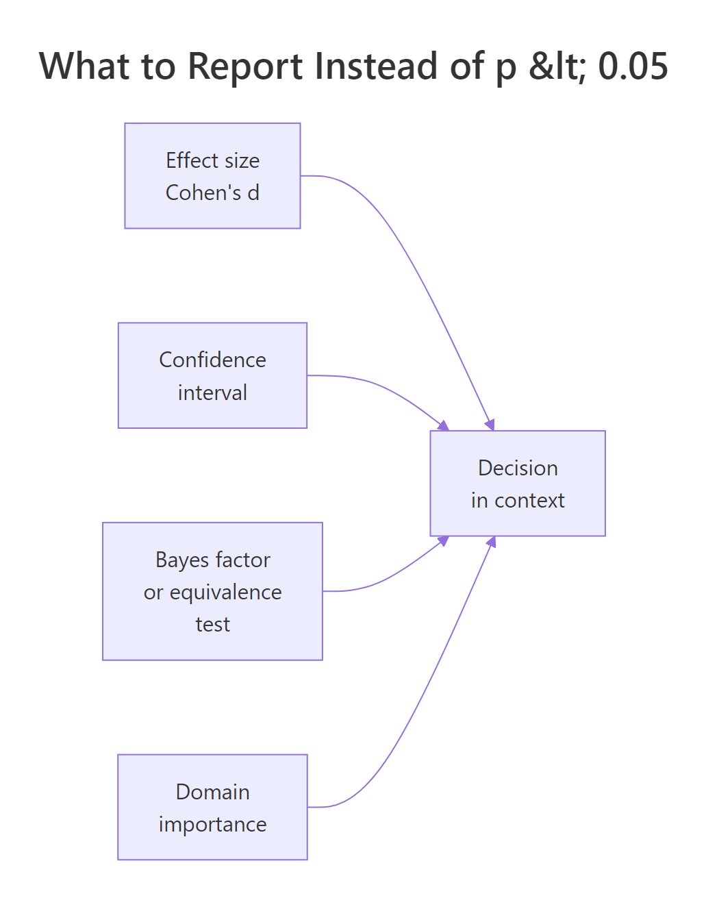

The p-Value Controversy in R: What's Wrong with NHST & What to Do Instead
The p-value controversy is not about whether p-values are wrong, it is about how routinely they are misread and how much weight the "p < 0.05" verdict is asked to carry. Once you see the verdict flip with sample size alone, you can replace it with a reporting pipeline that tells a more honest story.
Why is NHST controversial?
Null hypothesis significance testing (NHST) is not broken in the math, the controversy is about a specific pathology in how it is used. The exact same underlying effect can be declared "real" in a 5,000-person study and "not there" in a 50-person study, purely because of sample size. That is what the 2016 American Statistical Association statement on p-values pushed back on, and what the rest of this post walks you out of. The demo below flips the verdict in one code block.
The p_small of 0.79 says "fail to reject H₀, no evidence of a difference." The p_large of effectively 0 says "reject H₀, strong evidence of a difference." The underlying truth was exactly the same in both studies: group B sits 0.1 SD above group A. The only thing that changed was how many participants each study recruited. Whatever "the test says there is a real effect" is measuring, it is not measuring whether the effect is real. That gap between what users think NHST delivers and what it actually delivers is the entire controversy.

Figure 1: Three routes by which NHST misleads the reader, each ending at the same wrong verdict.
Try it: Rerun the same demo with mean_diff <- 0 so both groups share identical truth. Predict whether the two p-values should agree or disagree, then check.
Click to reveal solution
Explanation: When H₀ is true, p-values are uniformly distributed on (0, 1) by construction. Both sample sizes give p-values somewhere in that range. There is no tendency for large n to produce small p when the effect is genuinely zero, the sample-size trap only kicks in when there is any non-zero effect, however tiny.
What does a p-value actually mean?
Most of the p-value controversy comes from a mismatch between the textbook definition and how people read the output. The textbook says:
$$p = P(T \geq t_{\text{obs}} \mid H_0)$$
Where:
- $T$ = the test statistic as a random variable
- $t_{\text{obs}}$ = the value you computed from your data
- $H_0$ = the null hypothesis
In words, the p-value is the probability of getting a test statistic at least as extreme as yours, assuming H₀ is true. It is a statement about data, conditional on a hypothesis. It is not a statement about a hypothesis, conditional on data. That single switch is the source of most misreads.
The cleanest way to see what a p-value really is, is to simulate thousands of experiments where H₀ is genuinely true and watch the distribution of p-values it produces.
The fraction of "significant" results is about 5%, matching the nominal alpha. The quartiles are at roughly 0.25, 0.50, 0.75, the signature of a uniform distribution. That is the definition in action: when H₀ is true, p-values are flat on (0, 1), so any single p below 0.05 is just one of the 5% of outcomes you would expect anyway. Calling that "strong evidence" is a category error.

Figure 2: Four things a p-value is NOT, despite being widely read that way.
Here is the short table most NHST tutorials leave out:
| What people read into "p = 0.03" | What it actually says | |
|---|---|---|
| "There's a 3% chance H₀ is true." | Nothing about P(H₀), only P(data \ | H₀). |
| "There's a 97% chance the effect is real." | Same inverse probability mistake, just flipped. | |
| "The effect is important." | p is silent on effect size. | |
| "This will replicate." | p is a single-study quantity, not a replication rate. |
To see how dangerous that gap gets in practice, mix true-null and real-effect experiments at a realistic base rate.
Out of 142 "significant" findings in this run, about 44 are false discoveries. The false-discovery rate sits near 31%, not 5%. The 5% alpha controls the chance of a false positive given a true null, it does not control the fraction of "significant" papers that are wrong. When only 10% of hypotheses tested are real, a third of your "p < 0.05" wins are noise. Drop the base rate further and the FDR climbs toward 80%.
Try it: Change true_effect_rate to 0.30 (real effects are more common) and rerun. Predict whether the FDR will go up or down.
Click to reveal solution
Explanation: With 30% true effects, the FDR drops from roughly 31% to about 12%, even though alpha is still 0.05. The chance your "significant" result is noise depends on the prior plausibility of H₁, not just on the p-value. Fields with low base rates of true effects (novel drug screening, discovery-style genomics) pay a high FDR tax even when every researcher obeys alpha = 0.05.
How does sample size distort the significance verdict?
Block 1 already showed that the verdict flips with n. Now zoom in on how fast. A trivially small effect, 0.05 SD, essentially nothing a practitioner would care about, becomes reliably "significant" once n is large enough. That is what Jacob Cohen meant when he wrote that NHST eventually rejects everything given enough data.
At n = 20 per group, the 0.05 SD shift is invisible and the test rejects about 6% of the time, close to the nominal alpha. At n = 5000 per group, the same shift lights up the test nearly 70% of the time. Nothing about the real-world importance of a 0.05 SD change happened. Only the sample size changed. This is why "statistically significant" without an accompanying effect size is an empty claim: with enough participants, you can rediscover any trivial difference and cross the 0.05 line.
Try it: Set trivial_effect <- 0 and rerun the same grid. Predict what happens to the rejection rate across all sample sizes.
Click to reveal solution
Explanation: When the true effect is exactly zero, the rejection rate stays near 0.05 for every sample size. That is the type I error rate, which is what the test was designed to control. Sample-size inflation of "significance" only happens when there is some non-zero effect, however trivial, because NHST cannot distinguish "important" from "tiny but non-zero."
What should you report instead of p < 0.05?
The p-value is not useless, it is under-specified. Pair it with an effect size and a confidence interval, and the controversy mostly dissolves. The effect size tells you how big the difference is, the confidence interval tells you how precisely you measured it, the p-value is derivable from the CI anyway (if a 95% CI excludes zero, p < 0.05 automatically).
Cohen's d is the standard-deviation-scaled mean difference. Compute it in base R without any extra package.
The effect is 0.10 SD (a "very small" effect by Cohen's rule of thumb: 0.2 is small, 0.5 is medium, 0.8 is large), with a 95% CI from 0.07 to 0.14. That narrow interval, entirely above zero, is exactly why p_large was essentially 0. But notice what the CI adds: it tells you the effect is real and tiny. The p-value alone told you "real"; the d + CI tell you "real, and probably not worth acting on." That is the whole gain.
Four studies can all produce p = 0.03 and tell completely different stories once you look at their effect sizes and intervals.
All four headlines would read "statistically significant at p = 0.03." In reality, study A is a trivial effect of 0.05 SD, study D is a huge effect of 1.20 SD. A clinician who treats them the same is making a mistake the p-value cannot warn them about, but the effect-size + CI chart makes obvious in one glance.
d = 0.10, 95% CI [0.07, 0.14] communicates far more than p < 0.001, and the p-value falls out of the CI anyway.Try it: Compute Cohen's d + 95% CI for the small study (small_a, small_b). Expect an interval that crosses zero.
Click to reveal solution
Explanation: The point estimate is 0.05 SD, but the CI spans from roughly -0.34 to +0.45. The data are consistent with a meaningful negative effect, no effect, or a medium positive effect. That is what "non-significant in a small study" actually means. The honest report is: "underpowered, cannot rule out anything useful," not "we proved there's no effect."
Are Bayes factors and equivalence tests better alternatives?
p-values can only reject H₀, never support it. That is one-sided evidence by design. Two popular alternatives fix that in different ways.
A Bayes factor (BF₁₀) is the ratio of how well the data fit under H₁ versus H₀. BF₁₀ = 3 means the data are three times more likely under H₁. BF₁₀ = 0.2 means five times more likely under H₀, concrete support for the null. A BIC-based approximation (Wagenmakers 2007) lets you compute it with just lm() and BIC().
BF₁₀ = 0.10 and BF₀₁ = 9.64. By the Kass-Raftery scale, BF₀₁ between 3 and 10 is "moderate evidence for H₀." The same dataset that left NHST saying "we couldn't find anything" lets Bayes factors say "the data moderately support no effect." That asymmetry is what NHST gives up by construction.
The second alternative is equivalence testing (TOST, two one-sided tests), which flips the question from "is there a difference?" to "are they close enough that any difference is unimportant?" Pre-specify an equivalence bound, then run two one-sided tests against the edges. This is a quick sketch, the full details live in the TOST equivalence testing tutorial.
Both one-sided tests reject their bound, so equivalence_p is essentially 0. The true difference sits comfortably inside the ±0.2 equivalence zone. You can now claim "practically equivalent" with the same rigour a t-test claims "different." A p-value alone could never support this conclusion, it would just read "p < 0.001, reject H₀," which sounds like a discovery but misses that the discovered effect is too small to matter.
BayesFactor and TOSTER packages give richer output. For publication-ready Bayes factors with prior specification, use Morey & Rouder's BayesFactor package. For a full TOST workflow including effect-size bounds, use TOSTER. The base-R sketches here are the computational skeleton so you can see what the packages do under the hood.Try it: Recompute the BIC-based Bayes factor on the large study (large_a, large_b). Predict whether BF₁₀ will be above or below 1.
Click to reveal solution
Explanation: BF₁₀ is astronomically large, the data overwhelmingly favour the alternative. But remember block 5: the effect size is still only 0.10 SD. Bayes factors quantify evidence, not importance. A huge BF on a tiny effect tells you "we are very confident the effect is non-zero," which is a different question from "we should act on it." This is why the full reporting triple (effect size, CI, evidence measure) matters even after you move past p-values.
Practice Exercises
Exercise 1: Catch the n-illusion
You run a clinical trial comparing a drug to placebo. Pre-computed scores are below. Produce the full report, p-value, Cohen's d with 95% CI, and a BIC-based Bayes factor, then write a one-sentence conclusion a clinician could act on. Use variable names my_drug, my_placebo, my_report.
Click to reveal solution
Explanation: p = 0.14 (not significant), d = 0.15 (small), CI [-0.05, 0.35] crosses zero, BF₁₀ = 0.37 (weak-to-moderate support for H₀). A single-line conclusion: "with n = 200 per arm, we cannot rule out a small positive drug effect, but the data lean slightly against any real effect, replicate before acting."
Exercise 2: Build your own reporting line
Write a reusable function my_full_report(x, y) that takes two numeric vectors and returns a named list with p, effect_size (Cohen's d), ci_low, ci_high, and bf10. Test it on fresh simulated data inside the same pipeline.
Click to reveal solution
Explanation: The function bundles all four outputs, so every analysis you run produces the same complete report. p = 0.02 crosses the usual line, but d = 0.33 with CI down to 0.05 is barely distinguishable from "nothing," and BF₁₀ = 2.87 is only anecdotal evidence by Kass-Raftery. Reading any one of those numbers in isolation would mislead you, reading them together forces the honest summary: "possible small effect, needs replication."
Complete Example: a full decision pipeline
Put everything together on a simulated experiment. A company claims its new workflow reduces task completion time. Scores are collected for the old workflow and the new workflow.
Here is the honest plain-English readout from the above numbers:
- p = 0.034, crosses the conventional threshold.
- Cohen's d = 0.28, a "small" effect by Cohen's heuristic.
- 95% CI for d goes from 0.02 to 0.53. Lower bound is barely above zero, upper bound is firmly into "medium."
- BF₁₀ = 1.95, only anecdotal evidence for the alternative by the Kass-Raftery scale.
- Raw improvement is 3.3 seconds, the business decided 5 seconds was the minimum that would justify a rollout.
The NHST-only report would have read "the new workflow is significantly faster (p = 0.034)" and the rollout would proceed. The full report says: "the improvement is real-but-small, the evidence is only anecdotal, and the point estimate is below the 5-second threshold the business set in advance." Same data, wildly different decision. That is what the p-value controversy is actually about, not the math of p, but the decisions it gets asked to make alone.
Summary
The p-value is a useful supporting statistic. It becomes a problem when it is the only number reported. Replace the habit of reading a single p with a reporting pipeline that answers the reader's next three questions.

Figure 3: The four inputs that should drive a statistical decision, p-values are one input among several.
The p < 0.05 habit |
What to do instead |
|---|---|
| Report only the p-value. | Report effect size, 95% CI, and p together. |
| Treat "significant" as "real and important." | Check whether the CI excludes your minimum important difference, not just zero. |
| Treat "non-significant" as "no effect." | Compute a Bayes factor or run equivalence testing to see if H₀ is actually supported. |
| Let the conventional 0.05 threshold decide rollouts. | Pre-register a domain-specific decision rule tied to a real-world cost or benefit. |
| Add participants until the test is significant. | Pre-register the sample size from a power calculation for the smallest effect that would matter. |
| Chain multiple tests, report only the significant one. | Report all planned tests, correct for multiplicity, or switch to confidence-interval reporting. |
References
- Wasserstein, R. L. & Lazar, N. A. (2016). The ASA's Statement on p-Values: Context, Process, and Purpose. The American Statistician, 70(2). Link
- Wasserstein, R. L., Schirm, A. L. & Lazar, N. A. (2019). Moving to a World Beyond "p < 0.05". The American Statistician, 73(sup1). Link
- Greenland, S. et al. (2016). Statistical tests, P values, confidence intervals, and power: a guide to misinterpretations. European Journal of Epidemiology. Link
- Lakens, D. (2021). The Practical Alternative to the p-Value Is the Correctly Used p-Value. Perspectives on Psychological Science. Link
- Benjamin, D. J. et al. (2018). Redefine Statistical Significance. Nature Human Behaviour. Link
- Kass, R. E. & Raftery, A. E. (1995). Bayes Factors. Journal of the American Statistical Association, 90(430). Link
- Cumming, G. (2014). The New Statistics: Why and How. Psychological Science, 25(1). Link
- Wagenmakers, E.-J. (2007). A practical solution to the pervasive problems of p values. Psychonomic Bulletin & Review. Link
Continue Learning
- Hypothesis Testing in R, the parent framework this post supplements. Start here if the five-step decision loop is new, then return for the critique.
- Effect Size in R, a deep tour of Cohen's d, Hedges' g, and effect-size CIs using the dedicated packages.
- Equivalence Testing in R, the full TOST workflow sketched in block 8, including non-inferiority and bioequivalence.
- Statistical Power Analysis in R, the sample-size-planning half of the problem that block 4 exposed.
- Pre-Registration for R Analysis, the practice that closes the "add data until significant" loophole cold.